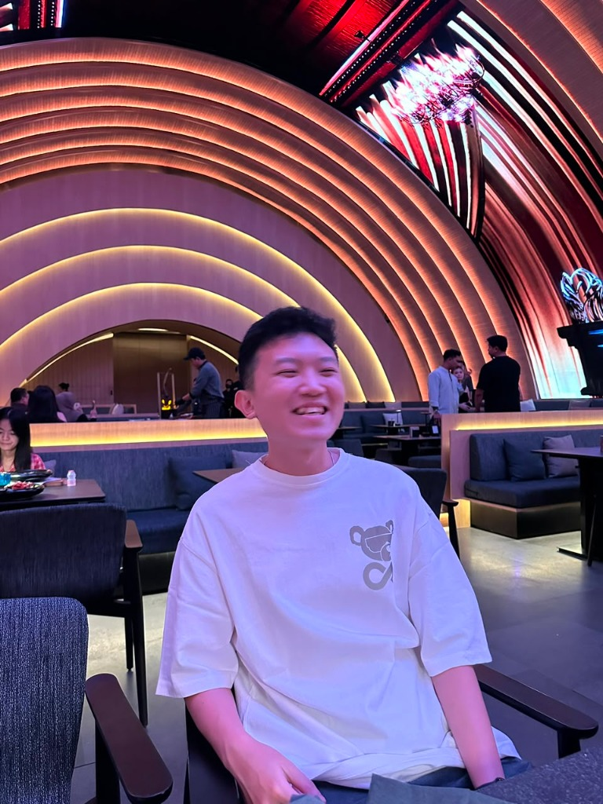

Hello, my name is Vincent, and I am currently a fifth-semester Informatics Engineering student at Pelita Harapan University (UPH). I have a strong interest in technology and continuously strive to improve my knowledge and skills in the field of information technology.
Throughout my academic journey, I have gained proficiency in basic Microsoft Office applications and have participated in several university projects, including website development. These experiences have helped me strengthen my problem-solving abilities, technical skills, and understanding of software development processes.
In addition to technical skills, I am able to work effectively both independently and as part of a team. I value communication, collaboration, and responsibility in every project I undertake. I am always eager to learn new technologies and take on challenges that can contribute to my personal and professional growth.
Outside of academics, I enjoy listening to podcasts, which allow me to gain new perspectives and insights from various fields. Looking ahead, my long-term goal is to become a successful entrepreneur and create innovative solutions that can make a positive impact on society.
Download CV